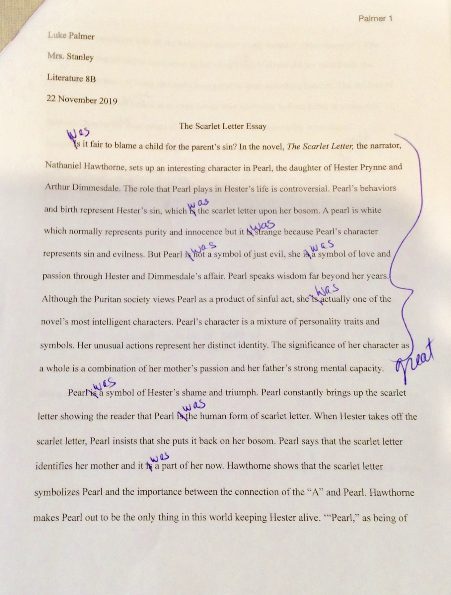

 This was my final essay on Nathaniel Hawthorne's The Scarlet Letter. This essay reflects my goal, showing that I have started to use more anaylysis in my papers. It also relflects my strength with no spelling errors, I jusrt used the wrong tense.